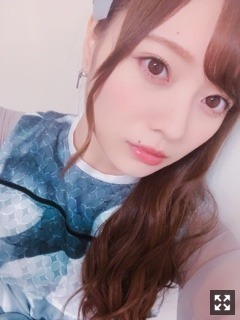

外の気温が好きすぎて夜は散歩の毎日～
みなさまこんにちは！！
乃木坂46 の
梅澤美波です！
先日の個握の梅澤です。
起こしくださった皆様
ありがとうございました！
個握のことはまた後日！！
今日はとっても肌寒くて
もう気づけば１０月も終わろうとしていますね〜
時間が経つのは本当に早い、
びっくりします( .. )
冬が楽しみです( ¨̮ )
冬服欲しいなあ〜
さてさて、
先日舞台「ザンビ」の顔合わせがあり、
稽古もついに始まりました〜！
緊張すると、
手が信じられないくらい震える私でして
顔合わせの日はひたすら震えてました（笑）
でも顔合わせした日、
プリンシパル、星の王女さま、
セラミュ、七ステでお世話になった
スタッフさん、キャストの方が沢山いて
すごく安心して、繋がりに感動して
とても嬉しくて嬉しくて、、
こうして違う現場で
またご一緒できることが本当に幸せ！
成長した私を見て頂けるよう
精一杯頑張ろう！と思いました！
キャストの皆さん、アンサンブルさん含め
全キャスト発表されたので
公式ホームページぜひご覧下さい！
私は役柄的にとても体力、気力を使うので
毎日稽古が終わるとへとへと、、
でも、だからこそやりがいを感じます！
ずっと緊張してる感じ！
すごく難しいけど、楽しいです！
頭もたくさん使って
いっぱい悩んで試行錯誤しています。
不眠症だった私も
最近はベッドに入ったら記憶にない間に眠りについています。（笑）
電車でも移動時間は常にうとうと、、
それくらいの充実感( ¨̮ )
まだまだ作る段階で
稽古も序盤です、
この段階をひとつ乗り越えて
着地地点が見えた時、
楽しい！って思えるんです☺︎
楽しみです、これから( ¨̮ )
チームBLUEの６人で
この間取材をして頂いたのですが
雰囲気がとても心地よくて
素敵なチームになる予感がして
わくわくしています！
欅坂さんの菅井さんと守屋さんは
とても落ち着いていてお姉さんのような存在！
一緒にいるととても安心します( ¨̮ )
どこの瞬間を切り取っても美しい(；；)
お二人ともすごくしっかりしてて
一緒のシーンも多いので
役柄の関係性がリアルに出せるように
沢山お話しできたらなあ☺︎
けやき坂さんの加藤さんと柿崎さんは
二人のやりとりが可愛すぎて
ついつい目で追ってしまう（笑）
柿崎さん、くっつくのが好きらしいので
くっついてくれるくらい
仲良くなるのが目標！！
なんだかすごいものになりそうです！
新しい新感覚の舞台になるのでは！と
私自身わくわくしながらも
ホラーが苦手なのでちょっとビビっていますが、
それがリアルに表現できるよう
頑張って参ります！！
怖いんじゃないかって、
そんなイメージが強いかもしれないですが
ストーリー自体とても素敵なので
そこもお楽しみに☺︎
昨日、稽古終わりに
加藤史帆さんと小坂菜緒さんと
としちゃんとなおちゃんって
呼んでいいよ〜って(；；)
めちゃくちゃ楽しかった！
色んなお話たくさんしました〜
もうすっかり仲良しです〜
初めてご飯行ったのに
初めてじゃないような空気感でした
とても落ち着く〜
なおちゃんはめちゃくちゃ落ち着いていて
としちゃんは赤ちゃんみたいです( ¨̮ )
すごくかわいい〜(；；)
稽古初日稽古着もお揃いでした☺︎
あやちゃん
前髪わけてるのもすき
そしてそして
２２枚目シングル、
「帰り道は遠回りしたくなる」
MVが公開されました！！
明るいのにどこか切ない、
一度聴くと忘れられないメロディです
本当に素敵な曲で
音源頂いてからすぐにお気に入りな曲に☺︎
MVの衣装もとっても素敵で
めちゃくちゃ可愛いんです！！
西野さんと若月さんと歌う
最後の楽曲。
大切に、大切に歌っていきます！

大好きな衣装！！
MVぜひご覧下さい！
そして今回は
「キャラバンは眠らない」
にも参加させていただいています！
こちらもとっても素敵な曲。
早く聴いていただきたい〜
個人PVも撮っていただきました(；；)！
面白くなってると思います！
撮影物凄く楽しかったのです！
わくわくです〜
母の角煮が食べたいです、、
お店でお味噌とか飲むと
母のご飯が恋しくなります。
この気持ち分かりますか？
伝われ〜〜
告知◎
▽１０／２０ non-no さま
スキンケア企画に参加させて頂きました！！毎月読んでいるnon-noさん、、とっても嬉しいです！見たよ〜と握手会で言ってくれる方もたくさんいて嬉しかった(；；)西野さん表紙の号です！ぜひお手に取ってみてくださいっ！
▽１０／２３ BRODY さま
本日発売です！ソロで撮って頂きました！
▽１０／３１BUBKA さま
若様軍団の軍団員、３人で取材して頂きました！若月さんへの愛を語りました！ぜひ！
▽１０／２７ 個別握手会@パシフィコ横浜
コスプレします〜！何着るか決めたよ〜！お楽しみに〜（笑）
▽１１／１６〜 舞台「ザンビ」
残り１ヶ月切っています！お楽しみに！
そんなこんなで
最近は毎日稽古と別のお仕事と
並行して充実しています！
後々報告できることが
沢山ありそうです！
待っていてください☺︎
それでは、また
寒い〜寒い〜って言いながら薄着で歩くのがなんだか心地よいですね〜
Original：https://www.nogizaka46.com/s/n46/diary/detail/47477?ima=4949&cd=MEMBER